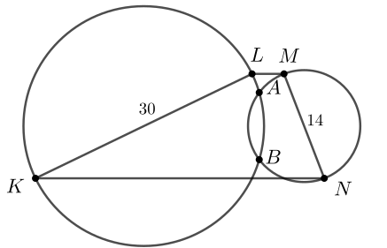
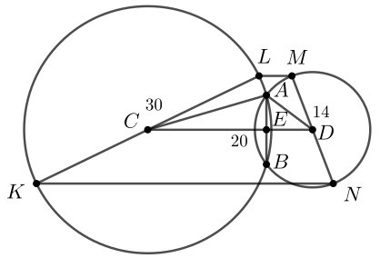

Дана трапеция KLMN с основаниями KN и LM. Окружности, построенные на боковых сторонах KL и MN как на диаметрах, пересекаются в точках A и B.
а) Докажите, что средняя линия трапеции лежит на серединном перпендикуляре к отрезку AB.
б) Найдите AB, если известно, что боковые стороны трапеции равны 14 и 30, а средняя линия трапеции равна 20.

а) Пусть CD - средняя линия трапеции. Тогда точка C - середина стороны KL и центр окружности с диаметром KL, а точка D - середина стороны MN и центр окружности с диаметром MN.
CD - отрезок, соединяющий центры окружностей, то есть отрезок CD перпендикулярен отрезку AB и делит его пополам. Следовательно, CD - срединный перпендикуляр к отрезку AB.
б) Пусть E — середина отрезка AB. Тогда AE — высота в треугольнике CAD.
Полупериметр треугольника ACD равен
Пусть S - площадь треугольника ACD, тогда
Значит,
Ответ: AB = 8,4